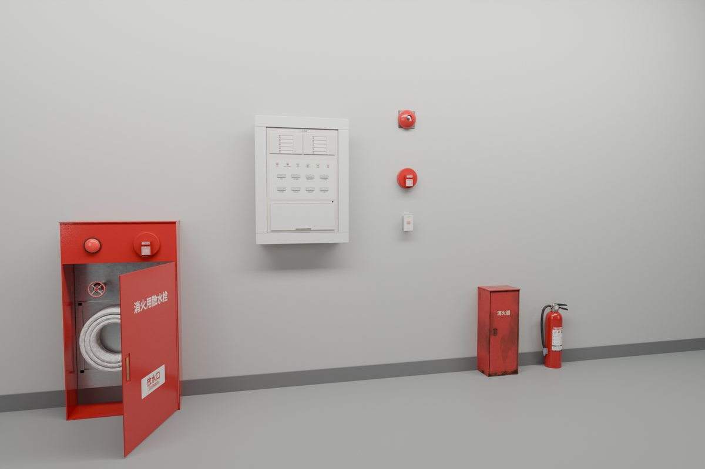

Japanese Fire Safety Equipment日本の消防設備パック
Indoor fire hydrant box with hose, fire alarm control panel and annunciator, manual call point, alarm bell, emergency alarm box, fire extinguisher and its box, heat / smoke detectors and gas leak detectors, as found in Japanese schools, offices and apartments.
消火栓箱・受信機・表示盤・発信機・ベル・消火器・消火器ボックス・感知器・ガス漏れ検知器など 13 種。